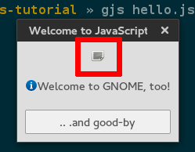
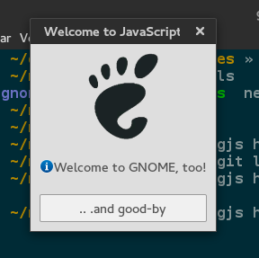

Como colaborar en

por (aquelando.info)
Introducción
¿Qué es ?
¿Qué es ?
- Entorno de escritorio
- Infraestructura de Desarrollo
- Comunidad
¿Por qué colaborar con ?
¿Por qué colaborar con ?
- Mejorar las herramientas que usas cada día.
- Experiencia en el mundo real.
¿Donde buscar ayuda?
IRC
(Internet Relay Chat)
Redes Interesantes
- Freenode
- GimpNet
- #gnome-love
- Salas de cada proyecto...
Listas de correo
Algunas listas interesantes
- gnome-love
- desktopdev
- Lista de cada proyecto...
Manos a la obra
Descargar, Ejecutar, Descubrir
Descargar
git clone git://git.gnome.org/newcomers-tutorialEjecutar
cd newcomers-tutorial
gjs hello.jsDescubrir
Entre muchos bugs...
Reportar el bug
Bugzilla
(bugzilla.gnome.org)
Un buen bug report debe ser:
- Reproducible
- Específico
- Único
- Actual
Solucionando el bug...
Código Fuente
[...]
// Create an image
this._image = new Gtk.Image ({ file: "gnome-image.jpg" });
[...]Repositorio
ch01@lura ~/newcomers-tutorial » ls
COPYING gnome-image.png hello.js newcomers-tutorial.doap
READMESolución
[...]
// Create an image
this._image = new Gtk.Image ({ file: "gnome-image.png" });
[...]Fixed!!
Commit!!
ch01@lura ~/newcomers-tutorial » git commit -a
Mensaje de Commit
tag: Short explanation of the commit
Longer explanation explaining exactly what's changed and why,
whether any external or private interfaces changed, what bugs
were fixed (with bug tracker reference if applicable) and so
forth. Be concise but not too brief.
https://bugzilla.gnome.org/show_bug.cgi?id=XXXXXXCrear el Parche
ch01@lura ~/newcomers-tutorial » git format-patch HEAD~1
From 339555f293b51b10730dd21660491462ebc07848 Mon Sep 17 00:00:00 2001
From: MrX <mrx@gnome.org>
Date: Sun, 5 Jan 2014 14:45:48 +0530
Subject: [PATCH] Fixed the problem with loading of image
I have substitute the image file extension.
https://bugzilla.gnome.org/show_bug.cgi?id=721546
---
hello.js | 2 +-
1 file changed, 1 insertion(+), 1 deletion(-)
diff --git a/hello.js b/hello.js
index 39fe8b9..a7b1950 100755
--- a/hello.js
+++ b/hello.js
@@ -39,7 +39,7 @@ const WelcomeToTheGrid = new Lang.Class({
this._grid = new Gtk.Grid ({ row_spacing: 20 });
// Create an image
- this._image = new Gtk.Image ({ file: "gnome-image.jpg" });
+ this._image = new Gtk.Image ({ file: "gnome-image.png" });
// Create a second image using a stock icon
this._icon = new Gtk.Image ({ stock: 'gtk-about' });
--
1.8.3.2Subir el parche
- Enlace Add an attachment en Bugzilla
- Git-bz (info)
Revisión del parche

Cosas a tener en cuenta
- Code Style
- Documentación (comentarios)
- Tests

Más allá...
Buscando qué hacer
gnome-love keyword
GNOME Goals
Dependencias...
JHBuild
No todo es programar...
- Documentación
- Traducción
- Diseño